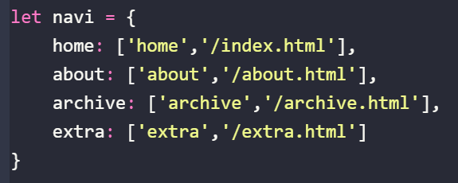
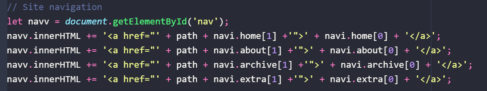

THIS IS OBSOLETE
So you wanna add extra navigation to your site. That's alright, but be aware that this may affect the mobile responsiveness of it.
1.
In script.js find this:
Then add to it:
2.
In scripts/post.js find this:
Then add to it:
